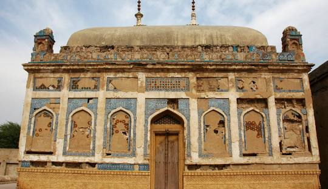

Hyderabad

Hyderabad is a city and the capital of Hyderabad Division in the Sindh province of Pakistan. It is
the
second-largest city in Sindh, and the eighth largest
Hyderabad is the second largest city of Sindh Province. The city was conquered by Mian Ghulam Shah Kalhoro upon
the ruins of a Mauryan fishing village along the coast of the Indus River. Formerly, Hyderabad was known as
Neroon Kot. Hyderabad city is rich in culture, traditions and history due to the fact that it lies alongside the
River Indus. This city used to be renowned as the “Paris of India” due to the belief that the streets of the
city were washed each morning with clean drinking water from the River Indus. Hyderabad now is a significant
commercial and cultural center and serves as the passage between the rural and urban Sindh. A visitor coming to
this city, can find one of the noteworthy sights, which include Pucco Kilo, Tombs of Talpurs, Mirs, and Kalhora
Rulers, Hyderabad Gymkhana which is the main social club of the city. Beautifully preserved with the culture and
tradition of Sindh, a museum has been established, which reflects the heritage and background of Indus Valley
Civilization. Other prominent sights include River Indus, Bridge of Jamshoro, Gold Building, which is circular
in shape. Rani Bagh, a park named after the Queen Victoria, Resham Gali and Shahi Bazar. The unusual thing about
Hyderabad city is a road called as” Thandi Sarrak”, which means cold street, where air pressure remains very
high.
:
- Population: 1.733 million
- Location:292 km²
- Climate: 14°C, Wind NE at 13 km/h, 60% Humidity
- Attractions: River Indus
See Attractive Places In Hyderabad